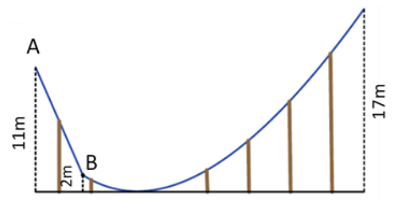
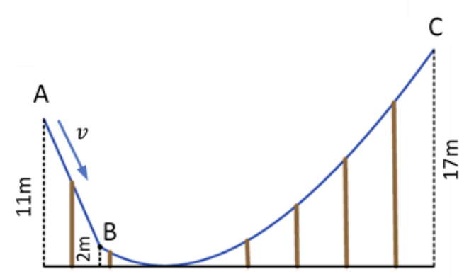

מגלשת המים "פוסידון" בנויה ממקטע ישר AB וממקטע עקום BC.
גובהי הנקודות A, B ו-C מעל פני הקרקע
הם 11 m, 2 m ו-17 m, בהתאמה (ראו איור 1).
ברק עולה על המגלשה, מגיע לנקודת ההתחלה A ונשכב על מזרון המים. משגיח המתקן משחרר את ברק ממנוחה.
הניחו כי החיכוך בין מזרון המים לבין המגלשה זניח.
נתון כי ברק מגיע עד לנקודה D1 (לא מופיעה באיור) ומשם מחליק חזרה.
האם נקודה D1 גבוהה מנקודה A, נמוכה ממנה או שווה לה בגובה? נמקו. (6 נקודות)

ברק התלהב ועלה בשנית על המגלשה. הוא ביקש ממשגיח המתקן שידחוף אותו.
המשגיח הסכים ושלח את ברק לדרכו מנקודה A במהירות שגודלה v וכיוונה מקביל למגלשה (ראו איור 2).
מהו גודלה המקסימלי של v כך שברק לא יעוף הלאה מהמגלשה בנקודה C? (7 נקודות)
ברק הזמין את אחותו רעות להתגלש על המזרון יחד איתו. משגיח המגלשה שחרר את המזרון ממנוחה. המזרון, יחד עם צמד האחים, מגיע עד לנקודה D2 שנמצאת במקטע BC.
האם נקודה D2 גבוהה מנקודה D1, נמוכה ממנה או שווה לה בגובה? נמקו, או הציגו חישוב מתאים. (7 נקודות)
ברק עלה שוב לבדו, והפעם התיישב על אבוב כך שיש חיכוך בין האבוב לבין המגלשה. משגיח המגלשה שיחרר אותו שוב ממנוחה. נתון כי מהירות האבוב בהגיעו לנקודה B היא 12 m/s, וכי מַסָּתָם של ברק והאבוב ביחד היא 50 kg.
אורך הקטע AB הוא 15 m.
השתמשו בשיקולי עבודה ואנרגיה וחשבו את עבודת כוח החיכוך במהלך התנועה מנקודה A לנקודה B. (7 נקודות)
מה גודלו של כוח החיכוך בין האבוב למגלשה במהלך התנועה מנקודה A לנקודה B? (6 1/3 נקודות)